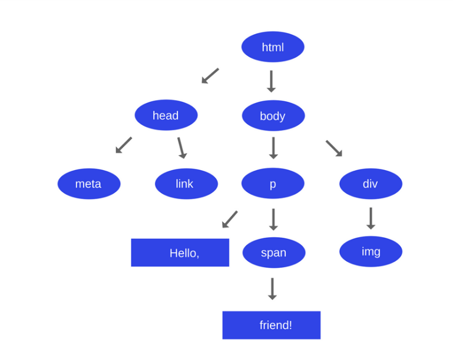
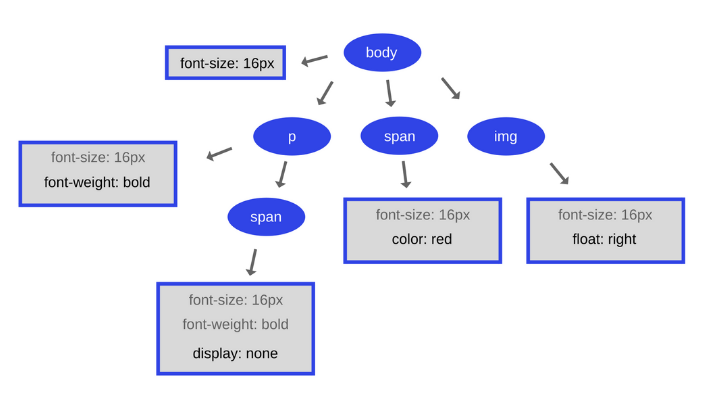

Vários são os termos: “navegador”, “navegadores”, “navegadores web”, “browser”, “browsers”, “web browsers”, etc. Mas então o que exatamente é tudo isso?
Um navegador é um software que carrega arquivos de um servidor remoto ou do disco local e o disponibiliza para visualização.
A principal função de um navegador é apresentar o recurso da web que você escolher, fazendo a solicitação ao servidor e exibição na janela do navegador. O recurso geralmente é um documento HTML, mas também pode ser um PDF, imagem ou outro tipo de conteúdo.
A maneira como o navegador interpreta e exibe arquivos HTML é especificada nas especificações HTML e CSS. Essas especificações são mantidas pela organização W3C (World Wide Web Consortium), que é a organização de padrões para a web. Durante anos, os navegadores obedeceram apenas a uma parte das especificações e desenvolveram suas próprias extensões. Isso causou sérios problemas de compatibilidade no passado, hoje, a maioria dos navegadores está mais ou menos em conformidade com as especificações.
Dentro de um navegador (que sabemos que é um software), podem haver outros pequenos softwares, onde cada um possui sua responsabilidade. Um desses “pequenos” softwares é o motor do navegador (browser engine).
Dentro de cada navegador (Chrome, Firefox, Opera, etc.) existe uma implementação do motor (engine). Ele é o responsável por descobrir quais são e como renderizar as informações dos arquivos que ele recebeu para que você visualize ou interaja com eles.
Exemplos de motores: Gecko, Blink, Webkit.
A responsabilidade do mecanismo de renderização é a exibição do conteúdo solicitado na tela do navegador.
Por padrão, o mecanismo de renderização pode exibir documentos e imagens HTML e XML. Ele pode exibir outros tipos de dados via plug-ins ou extensões; por exemplo, exibindo documentos PDF usando um plug-in visualizador de PDF.
A engine de renderização recebe o conteúdo do documento solicitado da camada de rede.
A primeira etapa da engine de renderização é analisar o documento HTML e converter os elementos analisados em nós DOM (Document Object Model) reais em uma árvore DOM.
Imagine que você tenha a seguinte entrada textual:
<html>
<head>
<meta charset="UTF-8">
<link rel="stylesheet" type="text/css" href="tema.css">
</head>
<body>
<p> Hello, <span> friend! </span> </p>
<div>
<img src="imagem.gif" alt=imagem" height="50" width="50">
</div>
</body>
</html>
❗ Calma, você ainda não precisa entender tudo o que significa isso, é apenas um exemplo para explicar o conceito deste módulo.
A árvore DOM deste HTML será parecida com esta:
Enquanto o navegador estava construindo o DOM da página, encontrou uma tag de link na seção head que estava referenciando a folha de estilos CSS tema.css externa (você vai ver mais disso nos próximos módulos também). Antecipando que possa precisar desse recurso para renderizar a página, ele imediatamente enviou uma solicitação para ele. Vamos imaginar que o arquivo tema.css tenha o seguinte conteúdo:
body {
font-size: 16px;
}
p {
font-weight: bold;
}
span {
color: red;
}
p span {
display: none;
}
img {
float: right;
}
É assim que a árvore de renderizadores das árvores DOM se parecerá:
Assim como no HTML, o mecanismo precisa converter o CSS em algo com o qual o navegador possa trabalhar. O objetivo desta árvore é permitir a pintura do conteúdo em sua ordem correta. Cada nó na árvore de renderização é conhecido como renderizador ou objeto de renderização no Webkit. É dessa forma que a W3C vem tentando especificar um padrão para que os diferentes webkits renderizem da mesma forma uma página web.
🔎 Fonte e/ou material complementar:
Como os navegadores funcionam: bastidores dos navegadores modernos (Tali Garsiel)